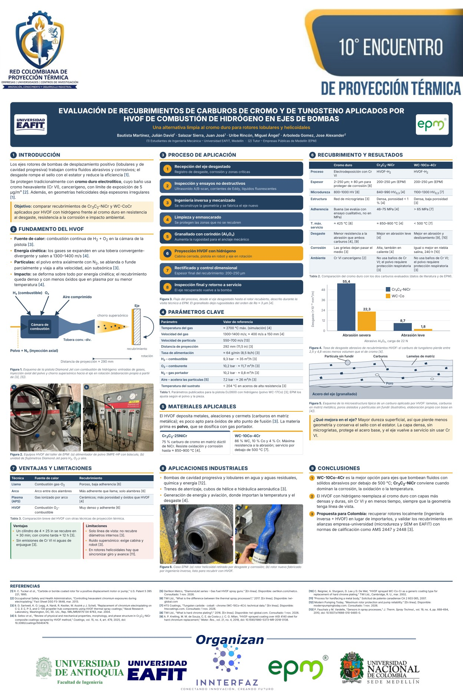

Carbide coatings for lobe pump shafts
We compared chromium carbide and tungsten carbide coatings deposited by hydrogen-fuelled high-velocity oxygen fuel spraying (HVOF). A maintenance question from EPM in Medellín gave us a practical selection criterion: what wears the shaft, and what must the replacement withstand?
Start with the worn part
José Alexander Arboleda Gómez, our EPM advisor, introduced us to the maintenance needs of operating positive-displacement pumps. Abrasive or corrosive fluids can change rotor geometry and compromise sealing. Replacing a worn component raises two linked questions: can we reproduce its geometry locally, and which surface will protect it in service?

From the workshop to material selection
We visited the plant, discussed the required geometry and service conditions with our advisor, and documented the workshop sequence from inspection and reverse engineering through spraying, grinding and dimensional checks. The coating needs a clear line of sight. On a helical surface, rotor rotation and gun travel must stay coordinated.
We then compared the published properties of two carbide powders against hard chromium plating. In HVOF, a high-speed gas stream carries heated powder to the surface. The resulting layer must resist the dominant damage mechanism while preserving the rotor’s finished dimensions.
| Candidate | Where we would evaluate it first |
|---|---|
| WC–10Co–4Cr | Solids-driven abrasion and sliding wear below 500 °C. Published microhardness in our comparison was 1,100–1,300 HV0.3. |
| Cr₃C₂–25NiCr | Corrosion, oxidation or higher-temperature service. Our sources reported 840–990 HV0.3 and service limits around 850–900 °C. |
What the comparison supports
Our recommendation depends on the operating environment. Hardness helps explain the appeal of tungsten carbide for abrasive solids, but the chromium carbide system offers a different balance when oxidation or temperature governs. Replacing the hard-chrome bath also changes the exposure profile. Powder handling and spray-booth controls still matter.
Our deliverable was a literature comparison and a field-informed poster. The hardness and wear figures come from published sources. Coating trials, microhardness measurements, microscopy and an in-service lifetime comparison are validation steps for future work.
An opportunity for local repair
We see an opportunity in Colombia to combine local reverse engineering with coating qualification. A workshop could reproduce the rotor and restore its finished dimensions. A university partner could examine the deposited layer before a monitored service trial. That sequence would establish whether local recovery can reduce import dependence for a particular spare.
Technical poster

Read the full-resolution poster and references (Spanish PDF)
Team and acknowledgements
Julián David Bautista Martínez, Juan José Salazar Sierra and Miguel Ángel Uribe Rincón. We developed the study in the surface treatment module of Fundamentos de Diseño de Máquinas at Universidad EAFIT with Professor Claudia Constanza Palacio Espinosa. José Alexander Arboleda Gómez guided the industrial case at EPM.
We successfully presented our poster at the X Encuentro de Proyección Térmica to thermal spray professionals and representatives from participating universities and invited companies.